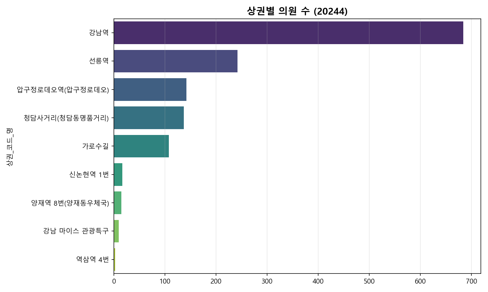
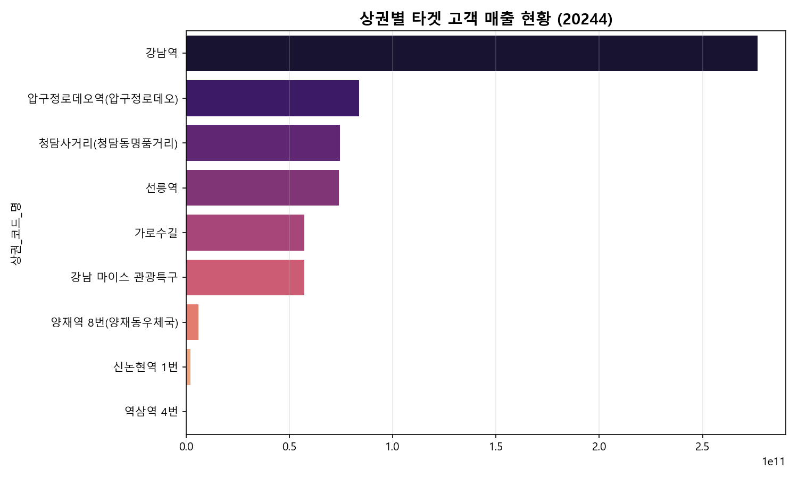
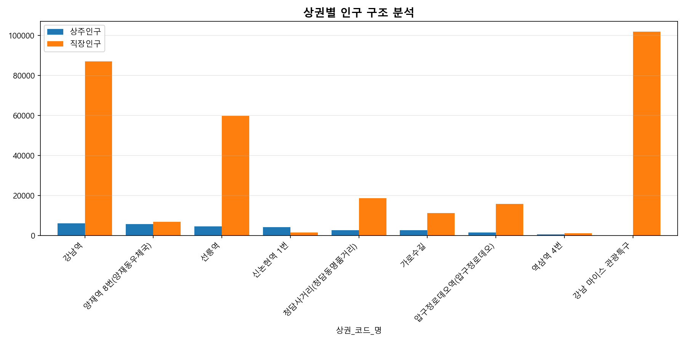
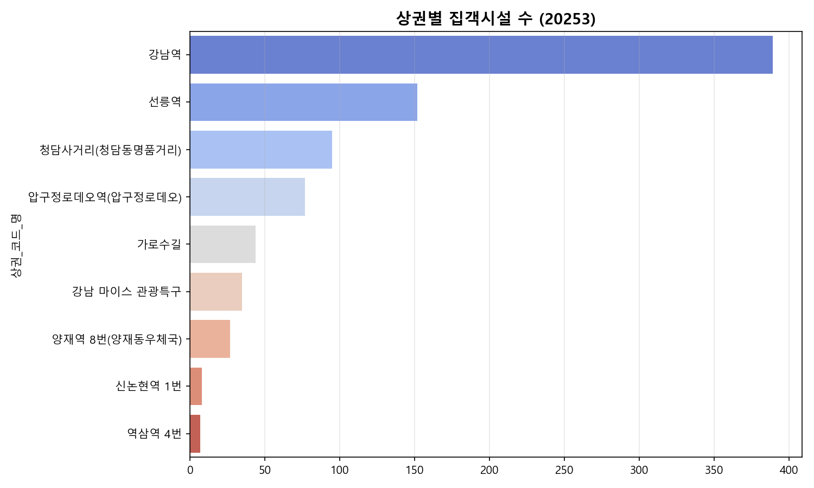
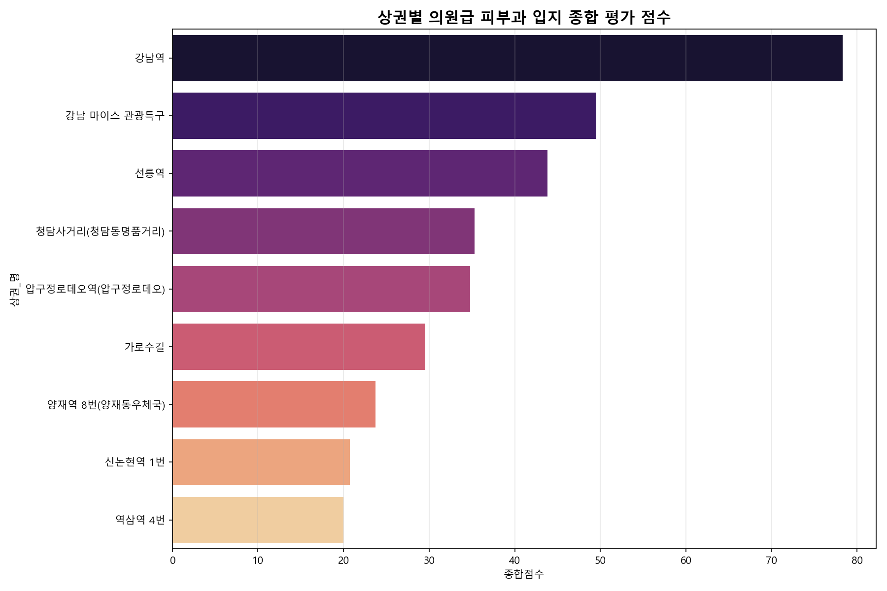

분석 일시: 2026-02-04 00:58
최종 추천 상권: 강남역, 강남 마이스 관광특구, 선릉역

상권별 피부과 의원 분포 상세

타겟 고객(20-40대 여성) 매출 밀집도

상주 및 직장 인구 구조 비교

주요 집객시설 분포 현황

| 상권_명 | 경쟁지표 | 고객지표 | 인구지표 | 입지지표 | 경쟁_N | 고객_N | 인구_N | 입지_N | 종합점수 |
|---|---|---|---|---|---|---|---|---|---|
| 강남역 | 684 | 2.765522e+11 | 93439 | 389 | 0.000000 | 1.000000 | 0.913853 | 1.000000 | 78.277064 |
| 강남 마이스 관광특구 | 10 | 5.730538e+10 | 102066 | 35 | 0.989721 | 0.207004 | 1.000000 | 0.073298 | 49.540560 |
| 선릉역 | 242 | 7.399124e+10 | 64677 | 152 | 0.649046 | 0.267356 | 0.626644 | 0.379581 | 43.799631 |
| 청담사거리(청담동명품거리) | 137 | 7.447698e+10 | 21434 | 95 | 0.803231 | 0.269112 | 0.194831 | 0.230366 | 35.333064 |
| 압구정로데오역(압구정로데오) | 142 | 8.363999e+10 | 17611 | 77 | 0.795888 | 0.302254 | 0.156656 | 0.183246 | 34.805976 |
| 가로수길 | 108 | 5.737694e+10 | 13947 | 44 | 0.845815 | 0.207263 | 0.120068 | 0.096859 | 29.545362 |
| 양재역 8번(양재동우체국) | 15 | 5.983120e+09 | 12735 | 27 | 0.982379 | 0.021376 | 0.107966 | 0.052356 | 23.709064 |
| 신논현역 1번 | 17 | 2.145182e+09 | 5887 | 8 | 0.979442 | 0.007495 | 0.039583 | 0.002618 | 20.732660 |
| 역삼역 4번 | 3 | 7.299859e+07 | 1923 | 7 | 1.000000 | 0.000000 | 0.000000 | 0.000000 | 20.000000 |